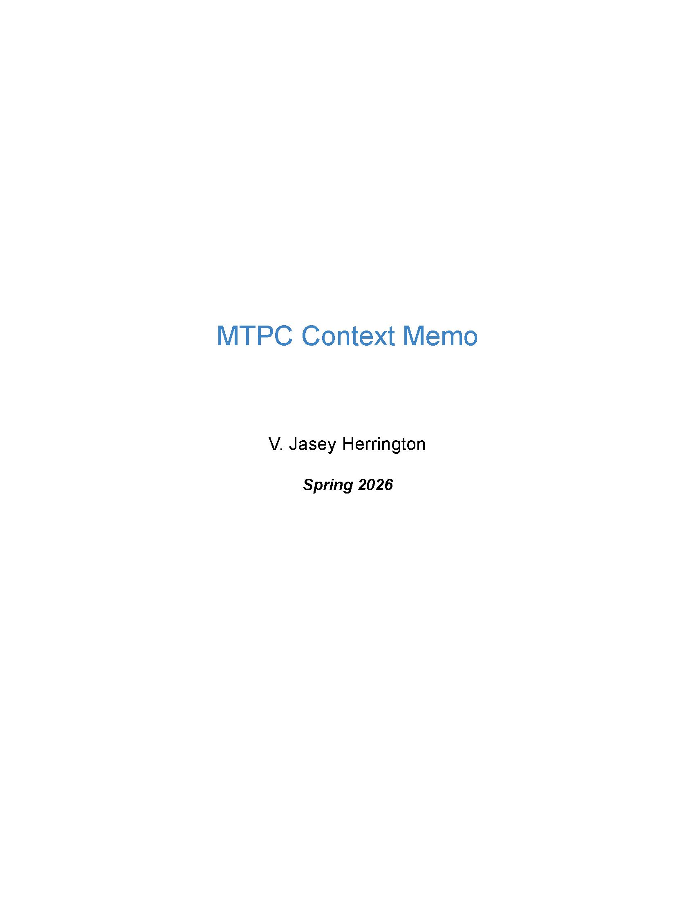
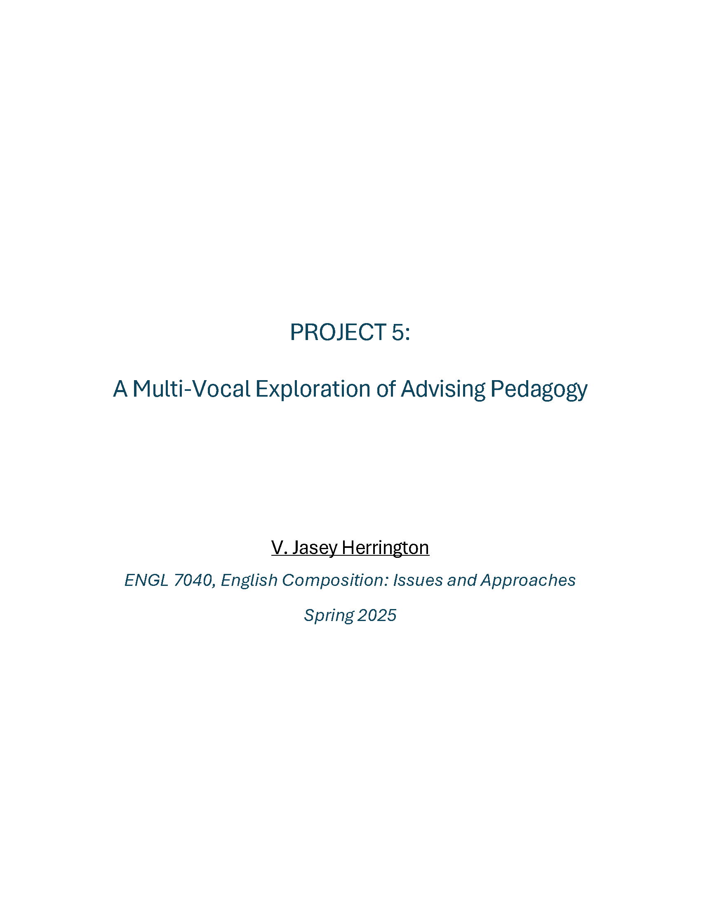

Portfolio Overview
This portfolio showcases selected academic, teaching, and professional work that reflects my approach to clear, ethical, and inclusive communication. My work draws from rhetoric, linguistics, and technical communication, with particular attention to accessibility and real-world contexts.

MTPC Context Memo

A Multi-Vocal Exploration of Advising Pedagogy | ENGL 7040